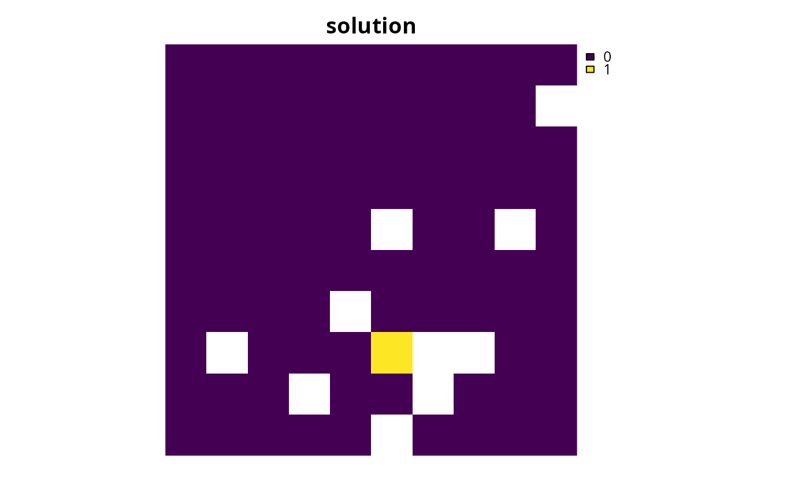
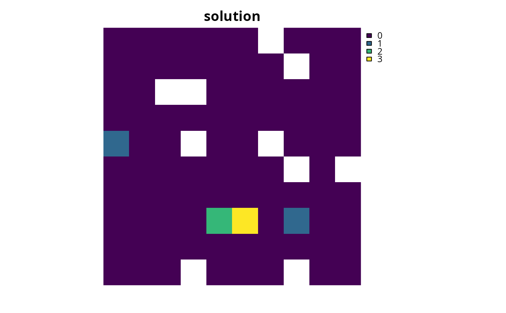

Set the objective of a conservation planning problem to
represent at least one instance of as many features as possible within a
given budget. This type of objective does not require the addition of
targets. Note that the mathematical formulation underpinning this
function is different from versions prior to 3.0.0.0. See the Details
section for more information on the changes since this version.
add_max_cover_objective(x, budget)
Arguments
| x |
|
|---|---|
| budget |
|
Value
ConservationProblem-class object with the objective
added to it.
Details
A problem objective is used to specify the overall goal of the conservation planning problem. Please note that all conservation planning problems formulated in the prioritizr package require the addition of objectives---failing to do so will return an error message when attempting to solve problem.
The maximum coverage objective seeks to find the set of planning units that
maximizes the number of represented features, while keeping cost within a
fixed budget. Here, features are treated as being represented if
the reserve system contains at least a single instance of a feature
(i.e. an amount greater than 1). This formulation has often been
used in conservation planning problems dealing with binary biodiversity
data that indicate the presence/absence of suitable habitat
(e.g. Church & Velle 1974). Additionally, weights can be used to favor the
representation of certain features over other features (see
add_feature_weights). Check out the
add_max_features_objective for a more
generalized formulation which can accommodate user-specified representation
targets.
This formulation is based on the historical maximum coverage reserve selection formulation (Church & Velle 1974; Church et al. 1996). The maximum coverage objective for the reserve design problem can be expressed mathematically for a set of planning units (\(I\) indexed by \(i\)) and a set of features (\(J\) indexed by \(j\)) as:
$$\mathit{Maximize} \space \sum_{i = 1}^{I} -s \space c_i + \sum_{j = 1}^{J} y_j w_j \\ \mathit{subject \space to} \\ \sum_{i = 1}^{I} x_i r_{ij} >= y_j \times 1 \forall j \in J \\ \sum_{i = 1}^{I} x_i c_i \leq B$$
Here, \(x_i\) is the decisions variable (e.g.
specifying whether planning unit \(i\) has been selected (1) or not
(0)), \(r_{ij}\) is the amount of feature \(j\) in planning
unit \(i\), \(y_j\) indicates if the solution has meet
the target \(t_j\) for feature \(j\), and \(w_j\) is the
weight for feature \(j\) (defaults to 1 for all features; see
add_feature_weights to specify weights). Additionally,
\(B\) is the budget allocated for the solution, \(c_i\) is the
cost of planning unit \(i\), and \(s\) is a scaling factor used
to shrink the costs so that the problem will return a cheapest solution
when there are multiple solutions that represent the same amount of all
features within the budget.
Note that this formulation is functionally equivalent to the
add_max_features_objective function with absolute targets
set to 1. Please note that in versions prior to 3.0.0.0, this objective
function implemented a different mathematical formulation. To
the add_max_utility_objective function.
References
Church RL and Velle CR (1974) The maximum covering location problem. Regional Science, 32: 101--118.
Church RL, Stoms DM, and Davis FW (1996) Reserve selection as a maximum covering location problem. Biological Conservation, 76: 105--112.
See also
add_feature_weights, objectives.
Examples
# load data data(sim_pu_raster, sim_pu_zones_stack, sim_features, sim_features_zones) # threshold the feature data to generate binary biodiversity data sim_binary_features <- sim_features thresholds <- raster::quantile(sim_features, probs = 0.95, names = FALSE, na.rm = TRUE) for (i in seq_len(raster::nlayers(sim_features))) sim_binary_features[[i]] <- as.numeric(raster::values(sim_features[[i]]) > thresholds[[i]]) # create problem with maximum utility objective p1 <- problem(sim_pu_raster, sim_binary_features) %>% add_max_cover_objective(500) %>% add_binary_decisions()# solve problem s1 <- solve(p1)#> Optimize a model with 6 rows, 95 columns and 118 nonzeros #> Variable types: 0 continuous, 95 integer (95 binary) #> Coefficient statistics: #> Matrix range [1e+00, 2e+02] #> Objective range [1e-04, 1e+00] #> Bounds range [1e+00, 1e+00] #> RHS range [5e+02, 5e+02] #> Found heuristic solution: objective -0.0000000 #> Presolve removed 6 rows and 95 columns #> Presolve time: 0.00s #> Presolve: All rows and columns removed #> #> Explored 0 nodes (0 simplex iterations) in 0.00 seconds #> Thread count was 1 (of 4 available processors) #> #> Solution count 2: 3.99978 -0 #> #> Optimal solution found (tolerance 1.00e-01) #> Best objective 3.999783399025e+00, best bound 3.999783399025e+00, gap 0.0000%# plot solution plot(s1, main = "solution", axes = FALSE, box = FALSE)# threshold the multi-zone feature data to generate binary biodiversity data sim_binary_features_zones <- sim_features_zones for (z in number_of_zones(sim_features_zones)) { thresholds <- raster::quantile(sim_features_zones[[z]], probs = 0.95, names = FALSE, na.rm = TRUE) for (i in seq_len(number_of_features(sim_features_zones))) { sim_binary_features_zones[[z]][[i]] <- as.numeric( raster::values(sim_features_zones[[z]][[i]]) > thresholds[[i]]) } } # create multi-zone problem with maximum utility objective that # has a single budget for all zones p2 <- problem(sim_pu_zones_stack, sim_binary_features_zones) %>% add_max_cover_objective(800) %>% add_binary_decisions()# solve problem s2 <- solve(p2)#> Optimize a model with 106 rows, 285 columns and 1476 nonzeros #> Variable types: 0 continuous, 285 integer (285 binary) #> Coefficient statistics: #> Matrix range [2e-01, 2e+02] #> Objective range [3e-05, 1e+00] #> Bounds range [1e+00, 1e+00] #> RHS range [1e+00, 8e+02] #> Found heuristic solution: objective -0.0000000 #> Presolve removed 0 rows and 74 columns #> Presolve time: 0.00s #> Presolved: 106 rows, 211 columns, 1328 nonzeros #> Variable types: 0 continuous, 211 integer (211 binary) #> Presolved: 106 rows, 211 columns, 1328 nonzeros #> #> #> Root relaxation: objective 9.710225e+00, 30 iterations, 0.00 seconds #> #> Nodes | Current Node | Objective Bounds | Work #> Expl Unexpl | Obj Depth IntInf | Incumbent BestBd Gap | It/Node Time #> #> 0 0 9.71023 0 15 -0.00000 9.71023 - - 0s #> H 0 0 4.9998928 9.71023 94.2% - 0s #> H 0 0 5.9998909 9.71023 61.8% - 0s #> 0 0 8.70179 0 13 5.99989 8.70179 45.0% - 0s #> H 0 0 6.9998628 8.70179 24.3% - 0s #> 0 0 8.66891 0 8 6.99986 8.66891 23.8% - 0s #> 0 0 8.66349 0 14 6.99986 8.66349 23.8% - 0s #> 0 0 8.66332 0 15 6.99986 8.66332 23.8% - 0s #> 0 0 8.64899 0 16 6.99986 8.64899 23.6% - 0s #> 0 0 8.46531 0 10 6.99986 8.46531 20.9% - 0s #> 0 0 8.45568 0 10 6.99986 8.45568 20.8% - 0s #> 0 0 8.45503 0 11 6.99986 8.45503 20.8% - 0s #> 0 0 8.40771 0 11 6.99986 8.40771 20.1% - 0s #> 0 0 8.40735 0 12 6.99986 8.40735 20.1% - 0s #> 0 0 8.40516 0 15 6.99986 8.40516 20.1% - 0s #> 0 2 8.40356 0 15 6.99986 8.40356 20.1% - 0s #> H 101 4 7.9998580 8.13617 1.70% 3.0 0s #> #> Cutting planes: #> Gomory: 4 #> Cover: 10 #> MIR: 4 #> StrongCG: 1 #> #> Explored 101 nodes (435 simplex iterations) in 0.06 seconds #> Thread count was 1 (of 4 available processors) #> #> Solution count 5: 7.99986 6.99986 5.99989 ... -0 #> #> Optimal solution found (tolerance 1.00e-01) #> Best objective 7.999858020965e+00, best bound 8.136165611959e+00, gap 1.7039%# create multi-zone problem with maximum utility objective that # has separate budgets for each zone p3 <- problem(sim_pu_zones_stack, sim_binary_features_zones) %>% add_max_cover_objective(c(400, 400, 400)) %>% add_binary_decisions()# solve problem s3 <- solve(p3)#> Optimize a model with 108 rows, 285 columns and 1476 nonzeros #> Variable types: 0 continuous, 285 integer (285 binary) #> Coefficient statistics: #> Matrix range [2e-01, 2e+02] #> Objective range [3e-05, 1e+00] #> Bounds range [1e+00, 1e+00] #> RHS range [1e+00, 4e+02] #> Found heuristic solution: objective -0.0000000 #> Presolve removed 75 rows and 171 columns #> Presolve time: 0.01s #> Presolved: 33 rows, 114 columns, 528 nonzeros #> Found heuristic solution: objective 0.9999628 #> Variable types: 0 continuous, 114 integer (114 binary) #> Presolved: 33 rows, 114 columns, 528 nonzeros #> #> #> Root relaxation: objective 9.999819e+00, 17 iterations, 0.00 seconds #> #> Nodes | Current Node | Objective Bounds | Work #> Expl Unexpl | Obj Depth IntInf | Incumbent BestBd Gap | It/Node Time #> #> 0 0 9.99982 0 12 0.99996 9.99982 900% - 0s #> H 0 0 7.9998257 9.99982 25.0% - 0s #> H 0 0 8.9998231 9.99982 11.1% - 0s #> 0 0 9.99982 0 4 8.99982 9.99982 11.1% - 0s #> H 0 0 8.9998235 9.99982 11.1% - 0s #> 0 0 9.99982 0 2 8.99982 9.99982 11.1% - 0s #> 0 0 9.99982 0 4 8.99982 9.99982 11.1% - 0s #> H 0 0 9.9998183 9.99982 0.00% - 0s #> #> Cutting planes: #> Cover: 4 #> MIR: 1 #> #> Explored 1 nodes (36 simplex iterations) in 0.02 seconds #> Thread count was 1 (of 4 available processors) #> #> Solution count 5: 9.99982 8.99982 8.99982 ... 0.999963 #> #> Optimal solution found (tolerance 1.00e-01) #> Best objective 9.999818258278e+00, best bound 9.999818991950e+00, gap 0.0000%